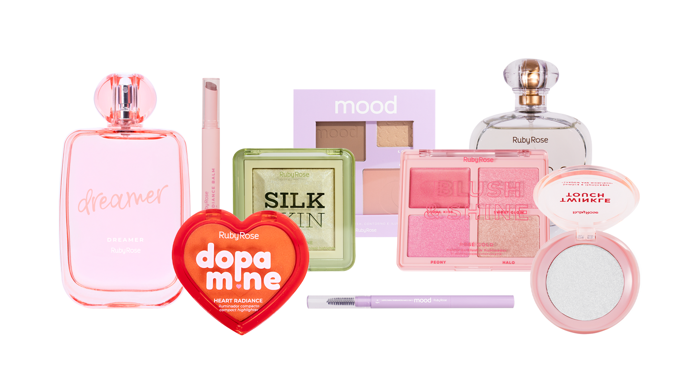

Sobre Maquiagem
A maquiagem é uma forma de expressar a personalidade e realçar a beleza de cada pessoa. Com diferentes cores e produtos, podemos criar vários estilos, desde os mais simples até os mais elaborados. Mais do que beleza, a maquiagem é uma maneira de cuidar de si mesma e aumentar a autoestima!

Quem somos?
Desde 1980 somos uma empresa que acredita que todos têm a oportunidade de expressar sua beleza. Seja ela qual for, oferecemos produtos de beleza de alta performance e com o melhor custo-benefício. Temos origem na Rússia e atualmente estamos presentes em 16 países. Trabalhamos para que, através de nossos produtos, você se sinta reconhecida, ouvida e realizada.